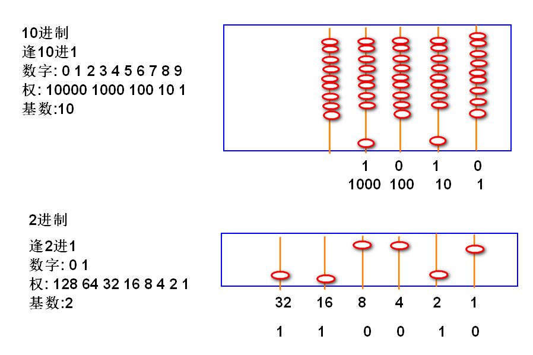
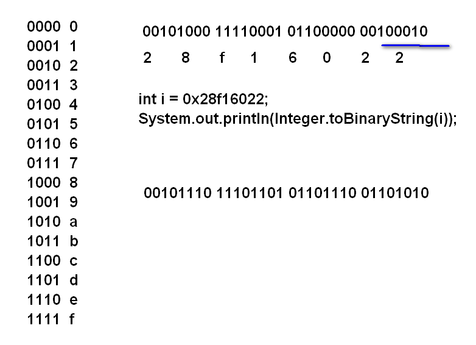
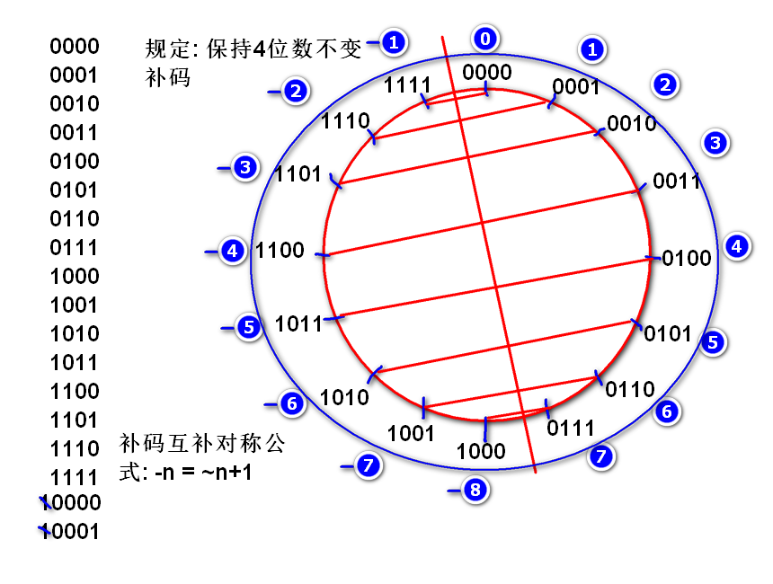

计算机内存中只有2进制数据,任何数据都需要转换为2进制才能计算处理!
案例:
public class Demo01 {
public static void main(String[] args) {
//i在内存中存储的是2进制数据
//Java 编译器在编译的时候将 "50"
//计算(Integer.parseInt)为2进制的 110010, 在运行期间
//i 的值是 110010, 在输出时候 println
//会自动的调用算法(Integer.toString())
//将2进制 110010 转换为10进制字符串 "50"
//显示出来.
int i = 50;
//显示i在内存中的2进制存储情况
System.out.println(
Integer.toBinaryString(i));
System.out.println(i); //50
for(i=0; i<=50; i++){
System.out.println(
Integer.toBinaryString(i));
}
}
}
"编程语言"利用算法(和稀泥)支持了10进制到2进制之间的转换.
计算机内存中没有10进制整数!
大多情况下10进制到2进制整数的转换会自动完成.
如果需要手动将10进制转换为2进制整数时候,就要需要调用Integer.parseInt()

输出0~50的全部二进制:
为了实现数字右对齐的效果, 需要导入 commons-lang 包:
<dependency>
<groupId>commons-lang</groupId>
<artifactId>commons-lang</artifactId>
<version>2.6</version>
</dependency>
测试 commons-lang:
public class Demo02 {
public static void main(String[] args) {
String str = "12";
// 在 str 的左侧填充字符 0 填充以后
// 总的长度是 10 个字符
// 0000000012
String s=
StringUtils.leftPad(str, 10, "0");
System.out.println(s);
str = "123";
s=StringUtils.leftPad(str, 10, "0");
System.out.println(s);
}
}
输出 0~50的2进制:
public class Demo03 {
public static void main(String[] args) {
/**
* 输出0~50实际的存储情况:
*/
for(int i=0; i<=50; i++){
String bin =
Integer.toBinaryString(i);
String s = StringUtils
.leftPad(bin, 32, "0");
System.out.println(s);
}
}
}
16进制的根本用途: 16进制用于简写2进制, 其中将2进制每4位数简写为1位16进制数.
16进制就是2进制!
计算机内部没有16进制!

案例:
public class Demo04 {
public static void main(String[] args) {
//16进制用于简写2进制数据
int i = 0x28f16022;
System.out.println(
Integer.toBinaryString(i));
i = -3;
System.out.println(
Integer.toBinaryString(i));
}
}
简写10进制50:
0011 0010
3 2
int i = 0x32;

补码是一个算法:
补码是计算机底层处理负数的算法.
int n = -3; System.out.println(n);//-3
经典面试题目:
判断对错: 一个正数溢出以后是负数.
答案: 错误
经典案例:
最大值加1是最小值!
互补对称考题:
System.out.println(~8+1);
如上代码输出结果 (____)
答案: -8
原理分析:
00000000 00000000 00000000 00001000 8
11111111 11111111 11111111 11110111 ~8 = -9
11111111 11111111 11111111 11111000 ~8 + 1 = -8
System.out.println(~100+1);
如上代码输出结果 (____)
答案: -100
System.out.println(~-100+1);
如上代码输出结果 (____)
答案: 100
System.out.println(~-100);
如上代码输出结果 (____)
答案: 99
int n = 0xffffffff;
System.out.println(n);
如上代码输出结果是(____)
A.2147483647 B.2147483648 C.-2147483648 D.-1
答案: D
~ 取反运算& 与运算| 或运算>>> 逻辑右移位运算>> 数学右移位运算<< 左移位运算& 与运算按位与运算
0 & 0 = 0
0 & 1 = 0
1 & 0 = 0
1 & 1 = 1
计算规则:将两个2进制数按照位对齐规则,对齐的两个数进行 与 运算
案例:
//经典计算: 掩码(mask)计算, 截取了n的后8位数字
n = 01101010 11011111 00100100 01101011
m = 00000000 00000000 00000000 11111111
k=n&m 00000000 00000000 00000000 01101011
案例实现:
int n = 0x6adf246b;
int m = 0xff;
int k = n&m;
System.out.println(Integer.toBinaryString(n));
System.out.println(Integer.toBinaryString(m));
System.out.println(Integer.toBinaryString(k));
Java IO 流:
>>> 逻辑右移位运算掩码计算和 逻辑右移位运算 配合可以将 整数 拆分为 4个Byte
案例:
n = 01101010 11011111 00100100 01101011
k=n>>>1 001101010 11011111 00100100 0110101
p=n>>>2 0001101010 11011111 00100100 011010
m=n>>>8 00000000 01101010 11011111 00100100
实验:
int n = 0x6adf246b;
int k = n>>>1;
int p = n>>>2;
int m = n>>>8;
System.out.println(Integer.toBinaryString(n));
System.out.println(Integer.toBinaryString(k));
System.out.println(Integer.toBinaryString(p));
System.out.println(Integer.toBinaryString(m));
将一个整数拆分为 4 个 byte
m = 00000000 00000000 00000000 11111111
b1 b2 b3 b4
n = 01101010 11011111 00100100 01101011
b4=n&m 00000000 00000000 00000000 01101011
b3=(n>>>8)&m
00000000 00000000 00000000 00100100
b2=(n>>>16)&m
00000000 00000000 00000000 11011111
b3=(n>>>24)&m
00000000 00000000 00000000 01101010
案例:
int n = 0x6adf246b;
int m = 0xff;
int b4 = n&m;
int b3 = (n>>>8) & m;
int b2 = (n>>>16) & m;
int b1 = (n>>>24) & m;
writeInt(int) 方法的底层原理就是 将int拆分为4个byte写入到文件中
| 或运算按位或: 两个数对齐进行或计算
0 | 0 = 0
0 | 1 = 1
1 | 0 = 1
1 | 1 = 1
有1便是1
案例:
n = 00000000 00000000 00000000 11010110
m = 00000000 00000000 10101100 00000000
k=n|m 00000000 00000000 10101100 11010110
代码验证:
int n = 0xd6;
int m = 0xac00;
int k = n | m;
将4个byte拼接为1个int
b1 = 00000000 00000000 00000000 10110101
b2 = 00000000 00000000 00000000 00101011
b3 = 00000000 00000000 00000000 10110111
b4 = 00000000 00000000 00000000 10011101
n = (b1<<24) | (b2<<16) | (b3<<8) | (b4<<0);
n = 10110101 00101011 10110111 10011101
验证:
int b1 = 0xb5;
int b2 = 0x2b;
int b3 = 0xb7;
int b4 = 0x9c;
int n = (b1<<24) | (b2<<16) | (b3<<8) | (b4<<0)
//int n = (b1<<24) + (b2<<16) + (b3<<8) + (b4<<0)
int readInt() 方法的底层采用了拼接计算, 连续读取4个byte,拼接为一个 int
移动小数点计算:
n = 41729. 向右移动小数点
m = 417290. 扩大10倍
m = 4172900. 扩大100倍
假设小数点位置不动, 相当于数字向左移动: 数字向左移动一次扩大10倍
10进制规律推广到2进制依然存在:
2进制时候: 小数点位置不动, 数字向左移动: 数字向左移动一次扩大2倍
案例:
n = 00000000 00000000 00000000 00110010. 50
m=n<<1 00000000 00000000 00000000 01100100. 100
k=n<<2 00000000 00000000 00000000 11001000. 200
验证:
int n = 50;
int m = n<<1;
int k = n<<2;
经典面试题目:
优化表达式: n*8 为 (___)
答案: n<<3
>> 数学右移位运算计算结果: 移动一次是数字除2, 溢出时候小方向取整数的结果 移位时候: 正数高位补0, 负数高位补1
案例:
n = 00000000 00000000 00000000 00110010 50
m=n>>1 000000000 00000000 00000000 0011001 25
k=n>>2 0000000000 00000000 00000000 001100 12
n = 11111111 11111111 11111111 11001100 -52
m=n>>1 111111111 11111111 11111111 1100110 -26
k=n>>2 1111111111 11111111 11111111 110011 -13
j=n>>3 11111111111 11111111 11111111 11001 -7
验证:
...
>>> 无论正负, 高位都补0, 用于逻辑计算>> 正数高位补0, 负数高位补1, 结果满足数学规律, 用于数学计算>>> 使用频率更高